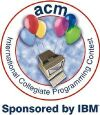

Николай Киров
Студентски състезания по програмиране
Връзки за студентски състезания по програмиране
infoman.musala.com
е портал съдържащ информация за състезания и алгоритмични ресурси.
Компютърен клуб на
ФМИ организира състезанията по програмиране за студентите от ФМИ
(Софийски университет),
както
и подготовката им за национални и международни състезания.
 ACM: Association for
Computing Machinery
is the world's first educational and scientific computing society.
Today,
our members — over 80,000 computing professionals and students
world-wide
— and the public turn to ACM for authoritative publications, pioneering
conferences, and visionary leadership for the new millennium.
ACM: Association for
Computing Machinery
is the world's first educational and scientific computing society.
Today,
our members — over 80,000 computing professionals and students
world-wide
— and the public turn to ACM for authoritative publications, pioneering
conferences, and visionary leadership for the new millennium.

The
ACM SouthEastern
European
Region